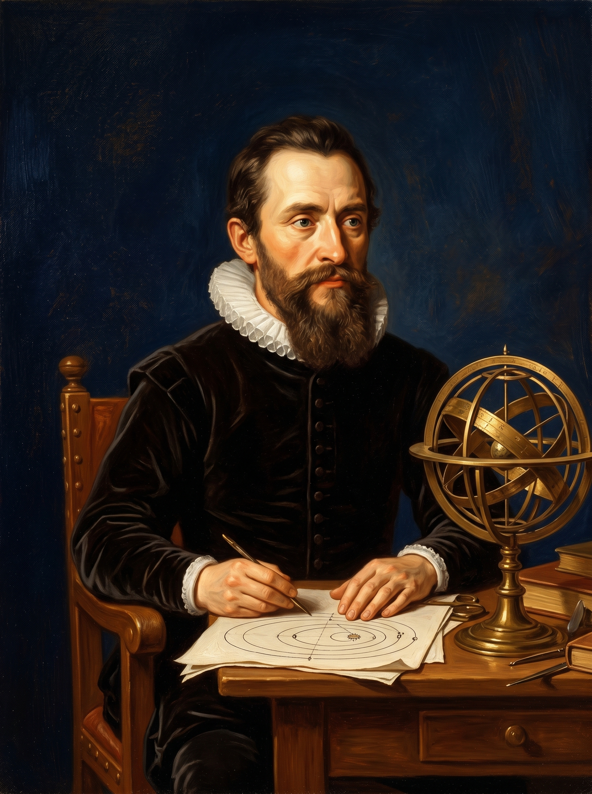
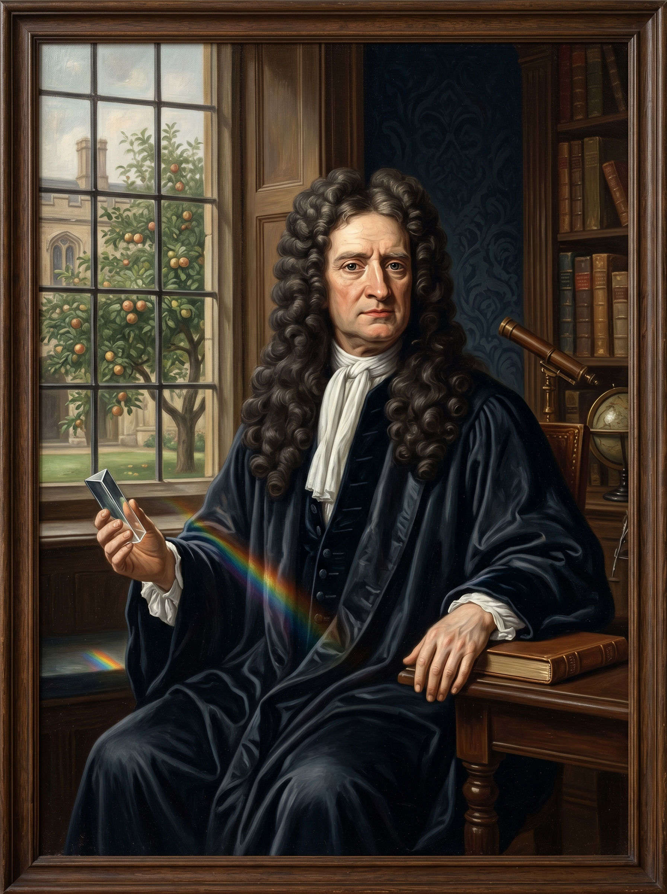
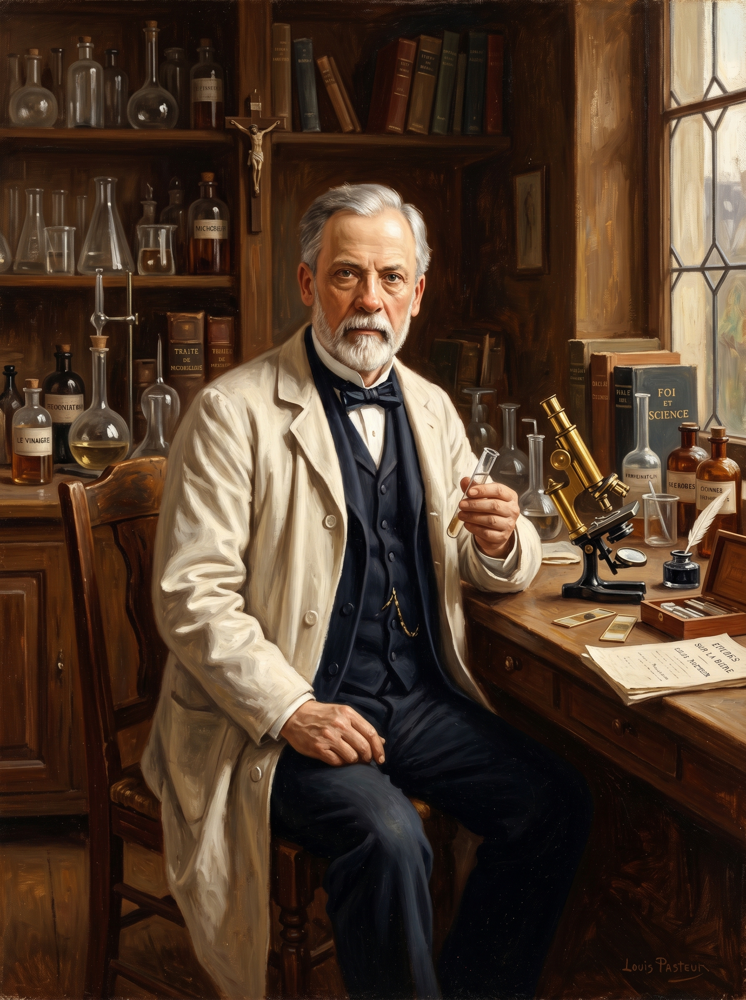
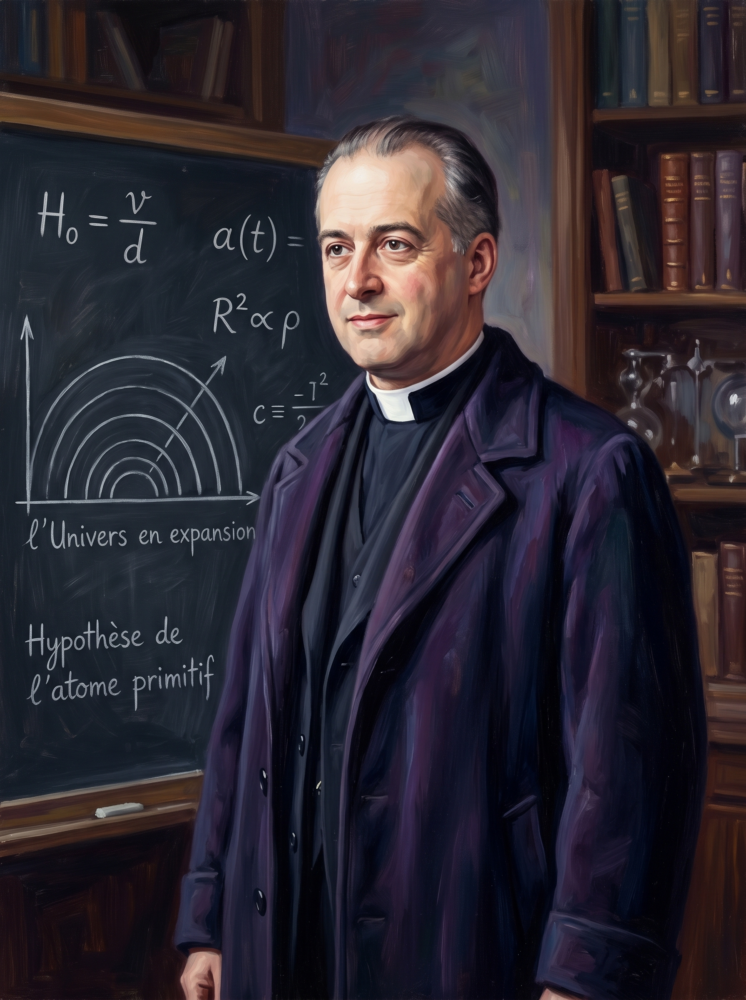

Fe y ciencia:
¿realmente en guerra?
Existe un mito muy extendido: que la ciencia y la fe cristiana son enemigas naturales. Históricamente, eso es falso.
¿Cómo?
Describe mecanismos, procesos, leyes naturales.
¿Quién? ¿Por qué?
Explica origen, propósito y significado. Son preguntas distintas — no se contradicen.
El verdadero conflicto no es entre fe y ciencia, sino entre el naturalismo filosófico (solo la materia y el azar lo explican todo) y el teísmo. Esa es una disputa de filosofía, no de ciencia.
"La verdadera ciencia surgió una sola vez: en Europa. La alquimia se volvió química y la astrología se volvió astronomía solo en el Occidente cristiano, porque allí se creía que la naturaleza es racionalmente cognoscible — obra de un Creador racional."
Científicos con cosmovisión bíblica
No son excepciones curiosas — son los fundadores de la ciencia moderna.

Propuso el heliocentrismo siendo canónigo de la Iglesia Católica.
- Modelo heliocéntrico del sistema solar
- Revolucionó la astronomía occidental
- De revolutionibus orbium coelestium (1543)

Decía que al estudiar el cosmos "pensaba los pensamientos de Dios después de Él".
- 3 leyes del movimiento planetario
- Órbitas elípticas de los planetas
- Fundamentos de la mecánica celeste

Dedicó enormes esfuerzos al estudio de la Biblia junto a sus investigaciones científicas.
- Ley de gravitación universal
- 3 leyes del movimiento (Principia, 1687)
- Cálculo diferencial e integral
- Descomposición de la luz en espectro

Creyente confeso. Refutó científicamente la generación espontánea.
- Refutó la generación espontánea
- Vacunas contra la rabia y el ántrax
- Pasteurización (proceso que lleva su nombre)
- Teoría microbiana de enfermedades

Sacerdote católico belga y astrofísico — propuso la teoría del Big Bang.
- Propuso la teoría del Big Bang (1927)
- Calculó la expansión del universo
- Precedió a Hubble en el descubrimiento
"La Escritura nos enseña cómo ir al cielo, no cómo van los cielos."
El choque entre Galileo y la Iglesia se cita siempre como prueba de la guerra fe-ciencia. Pero Galileo fue un cristiano confeso. El conflicto fue más por la filosofía aristotélica de la época — y por el carácter combativo de Galileo — que por la Biblia misma.